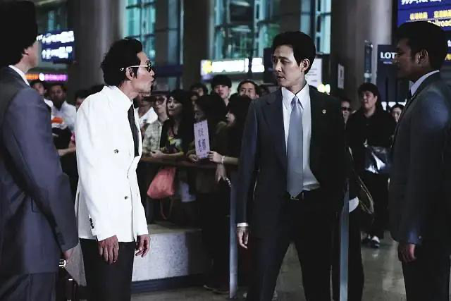

从邪恶中拯救我
黄政民演的电影，目前看过的品质都很好。 国内目前的演员张译就如比。
这个电影的动作也太爽了些。打斗刺激。
电影的前面没有看导致剧情有点没理解，但是黄政民为了救一个小女孩也是真的拼了命。
正面和反面的演技都很好，没有让人出戏的地方，不得不说韩国的编剧是真的很会写故事。电影全程看完没有什么大的尿点，除了泰国的黑社会和警方没什么存在感，泰国的黑社会大佬的地方轻轻松松就被反派入侵了，太扯了。
干什么都不要和地方的最大权力方相抗，干不过的，电影只是电影。这要是在中国，分分钟让你体验什么是国家机器。

Figure 1: 李政宰（左）、黄政民（右）
不得不说两个都是演技牌，演的没毛病。
有影评说反派演的角色全程扑克脸，为什么还要被吹演技？我不这么认为，剧情中说了他是脱北者，自己的父亲干的是屠宰的工作，工作结束后就会拿他哥和他出气，打他们，那么他两长大了从事黑社会这个也就可以理解了，这也是为什么自己的亲哥被杀后他要追到泰国杀男主。

Figure 2: 《新世界》剧照
我说呢，这两个人之前演过新世界这个电影，这部电影剧情很好，是各大电影解说频道都会解说的一部电影，有很深的人性可以挖掘。
黄政民和小女孩，以及小女孩的妈妈是什么关系？他们是一家人吗？否则为什么说找到小女孩的时候第一次有了活下去的念头？黄政民演的角色是韩国官方陪养的杀手吗？
补了下背景知识，果然小女孩是男主的遗腹子，原来是个杀手，杀手意味着在各种地方过着刀口舔血的日子，突然得知自己在个女孩被国际人口贩卖组织绑架了，那么从一个能力超强的杀手转变为一个有人性的父亲的角色，这个过程人物就成长了、饱满了、丰富了。
中韩两国中有多部电影都是去泰国拍的，为什么这些要去泰国呢？有什么优势吗？还是泰国目前比较乱，比较适合拍这种环境"乱糟糟"的电影。